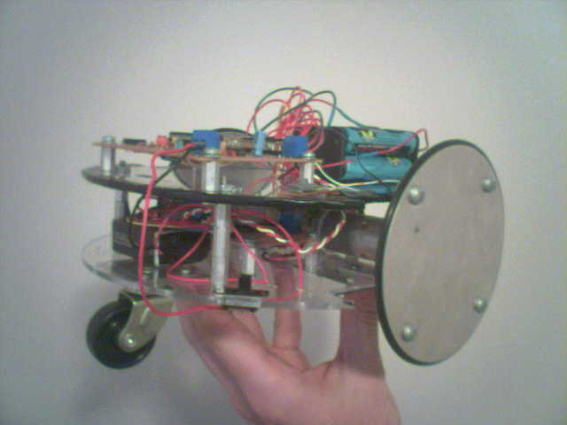

May 27, 2006
|  |
|
| FailureBot 5 - Complete Robot |
FailureBot 5 Following A Line |
Introduction
The objectives of the FailureBot project originated simply as "build a
line-following robot". However, it somehow evolved into a 3-year
robotics experiment. My first attempt to build a robot was such a
complete failure that I jokingly called it "FailureBot". The name seemed
quite appropriate even as the project evolved as every one of the many,
many failures yielded a critical lesson in the robot-building process.
For me, hobby robotics is about creativity. I didn't want to throw a
couple sensors on a robot kit, I wanted to build it from the ground up.
Looking through catalogs, reading datasheets, and building the robot
within the constraints of my limited resources was the ultimate
experience. Much of this robot is built from raw materials and hardware
available at local hardware stores-- and done so on a very limited
budget. Throughout the process, I kept a couple of concepts in mind:
- Close enough is good enough.
I'm not a NASA engineer, I'm a hobbyist. It doesn't have to be perfect,
it just has to work. This is especially true considering that my
"workshop" is merely a bedroom floor and a Dremel rotary tool. I don't
have the facilities to make straight cuts or aligned holes. Improvise.
- The overall goal is to learn and discover. When it felt like I was re-inventing the wheel I just reminded myself that I was learning how the wheel was invented.
- Success is a series of failures. It can be very discouraging to spend large amounts of time only to hit a dead-end and start over. This is FailureBot 5
because I've had to start over from scratch 5 times with the physical
construction. The lessons learned made it very much worth while.
- Work within your means.
I would often get discouraged by what I see other people
building--making molds, welding, etc. I don't have those resources nor a
large budget. A roboticist shouldn't be thinking about how it is
supposed to be done, but how it could be done considering the elements.
|
|
| FailureBot 3 - Alluminum Frame/PIC16F627A |
FailureBot 4 - Breadboard/PIC16F877A |
Line Following Robots
A line-following robot, or "line follower" is a pretty common type of
robot for hobbyists. Robotics competitions usually have a line-following
event. The line is usually a black line about 3/4" wide, such as black
electrical tape, on a white surface. Advanced courses may add new
challenges such as inclines, tighter turns, intersections, thinner
lines, or changing line colors. The robots typically sense the line by
measuring light reflected off the ground, where a black line reflects
little/no light and the white floor reflects a lot of light back.There
are TONS of websites relating to line-following robots as it's a very
common beginner project.
The Robot Room has some great information on a couple of line following robots.
FailureBot 5 Overview
FailureBot 5 is actually a fairly good robot base which could easily be
adapted to maze solving, obstacle avoiding, or other applications of a
small, 2-wheeled robots. However, at this point in time, it only
follows a line. The robot consists of 2 plastic round decks,
differential drive using 2 DC gearhead motors, a sensor board with 5
photo-transistor/LED sensors, an L293D H-Bridge motor controller board,
and an Atmel ATMega8 processor board.
A sensor board with 5 sensors shines light downward at the ground. If
the line is underneath the sensor, then the little/no light will be
reflected back to a paired phototransistor. If the line is not
underneath the sensor, more of the light will be reflected back. A
microcontroller measures the output of each of the phototransistors
through it's analog-to-digital converter (ADC). Based on the position of
the line underneath the robot, the microcontroller adjusts the
speed/direction of the DC motors to steer the robot.
Building FailureBot 5
Building the robot was the hardest part for me. I am by no means a
mechanical engineer and had a lot to learn. FailureBot 5 is a round,
2-deck, 2-wheeled differential-drive robot.
A differential-drive robot works like a tank. The two wheels provide
both the drive and the steering. By stopping one motor and not the
other, the robot pivots on the stopped motor to turn. By turning one
motor forward and the other motor backward, the robot turns in place.
The wheels are offset forward slightly and a caster is placed in the
back of the robot for support.
The Base and Second Deck
The base and second deck are
0.118" thick x 6" diameter Acrylic Circles purchase from
Tap Plastics
for $1.95 ea. They were cut to allow the wheels to be mounted within
the diameter of the acrylic circles. The cutting as well as drilling
holes for mounting motors and electronics was all done with a Dremel
rotary tool. A piece of paper with drill/cut marks was taped over the
acrylic circle as a guide for cutting. A piece of aluminum foil was
also taped to the under-side of the second deck and connected to ground
to serve as a sheild between the motors and the processor board.
The decks are connected to each other using 4" 6-32 screws with 6-32 hex
standoffs spacing the 2 decks apart. I have no idea where I got the hex
standoffs, but I'm sure they're pretty common.
|
|
| Cutting/Drilling the Base with Dremel |
Base with Motors, Controller, Wheels and Caster |
|
|
| Second Deck with Aluminum Foil Sheild |
|
Motors and Wheels
In earlier attempts I had problems with motors not having enough torque
to properly move the heavy robot bases I was building. I decided to buy
gearhead motors with a very high torque and use larger wheels to make up
for the loss in RPMs. There are 2
Lynx Motion Planetary Gear Motors (12vdc 189:1 31rpm)
($11.40/ea) which drive the two wheels. Each wheel is made out of two
4" round discs bolted together with 2 washers spacing them out. The
discs are from Home Depot ($1.49/ea) which are used to cover electrical
boxes. A 4" O-ring (also from Home Depot) sits in the gap between the
two discs to serve as tires. These relatively large wheels allow the
slower motors to suffice for moving the robot quickly. They are also
nice and thin giving the robot the ability to easily turn by pivoting on
one wheel. The wheels were then attached to the motors using a pair of
the
6mm Universal Wheel Hubs
from Lynxmotion ($8.00).
The motors are then mounted to the base using a homemade motor mount.
Although Lynxmotion also sells motor mounts, I had already felt I had
spent enough money on the motors. Home Depot (or Lowes, etc) has a
section with weather stripping including long pieces of aluminum in
various shapes and thicknesses. I picked up a right angle strip (4" wide
piece of aluminum folded at 90 degrees) and cut it up using--once
again--the Dremel rotary tool.
The motors are mounted slightly forward from the center-line of the
robot and a caster from Home Depot ($2.95) was mounted in the
back/center of the robot.
|
|
| Lynxmotion Motor with Home-made Mount |
Lynxmotion Motor with Home-made Mount |
|
|
| 0.1uF Capacitors on Motor Terminals |
Home-made Wheel and Lynxmotion Hub |
|
|
| Wheel without Tire |
Disassembled Wheel |
Sensor Board
The sensor board was one of the only things that worked since the very
first FailureBot. There are 5 line sensors. Each line sensor consists of
a single red LED and a photo-transistor. The electronics of the sensor
board will be discussed later. However, the construction here does make a
difference. The phototransistors will be sensitive to the ambient light
in the environment and thus I want to keep that down to a minumum. I
want the light from the LEDs bouncing off the ground back to the
phototransistor to be the primary light hitting the phototransistor.
I used a piece of acrylic plastic (Home Depot and Lowes sell acrylic
rectangles for a few bucks) which I spray painted black in numerous thin
coats to ensure that it was opaque. Then, holes are drilled for the
LEDs and photo transistors such that the LEDs protrude out and the
phototransistors are set in a bit (see my sketch below). I wasn't too
concerned with one sensor being skewed or protruding more/less as I knew
I could have each LED independently calibrated via software (discussed
later).
Finally, two 3" 6-32 screws with locknuts and wingnuts are used to
attach the sensor board to the robot. This way, I can adjust the
distance of the sensors to the ground manually by moving the locknut
up/down.
 |
|
| Sensor Board (front) |
Sensor Board (bottom) |
|
|
| Sensor Board (top) |
Sketch of Single Sensor |
|
|
| Sensor Board Attached and Running |
|
FailureBot 5 Electronics
Motor Controller
The motor controller is a simple H-Bridge using the L293D ($2.70 from
Digikey).
5 lines from the microcontroller are used to control the 2 motors.
ENABLE runs directly to the EN pins of the L293D to disable the motors.
M1DIR is the direction control for the left motor and M2DIR is the
direction control for the right motor. M1PULSE is the PWM signal to run
the left motor at it's desired speed (at the time of writing, the
software isn't using PWM but running the motors at full speed) and
M2PULSE is the same for the right motor. This is a very common DC motor
control concept and thus I'm not going to go into further detail. A
Google search will return numerous pages on the topic.
When testing the motors, I found that they pulled 50mA with just the
wheel spinning freely and 590mA stalled. The L293D can handle 600mA per
channel. Just to be on the safe side, I put a heatsink on the L293D
though It was never necessary in any of the earlier versions running on a
breadboard.
The most important thing I learned with this part was this: BEWARE OF
THE NOISE FROM MOTORS! The motors can add tremendous noise to the supply
even when using a separate battery for the motors than from the rest of
the electronics (common ground). The solution was the capacitors on the
motors. Three 0.1uF capacitors were used on each motor. One was
connected between the motor terminals, and also one from each terminal
to the motor's casing. I also added the aluminum sheild to the
under-side of the upper deck as mentioned above, and twisted the wire
leads to the battery.
Michael Simpson's "Reduce Motor Noise" discusses these techniques in more detail.
(Click to Enlarge)
|
 |
| Motor Controller (top) |
Motor Controller (bottom) |
Sensor Board
For each sensor, I used a SSL-LX5093SRC/E RED LED with a clear lens in a
T1 3/4 package ($0.54/ea from Digikey) paired with an OP505B
phototransistor ($0.59 from Digikey). Since phototransistors are
designed for the infared frequency spectrum, I was looking for an LED
with a relatively high peak wavelength and a phototransistor with a
relatively low peak wavelength, or at least a broad bandwidth, so that
their active bandwidths overlap. I had read that you don't want to use
infared LEDs for line detectors as infared light does have the same
reflective properties as visible light. In rhetrospect, I was being a
little overly concerned here. I believe just about any red LED and
phototransistor would have sufficed considering the ability to calibrate
the sensors via software.
I did not want to deal with difficult hardware for the sensors. I knew
the tools I have at my disposal will not allow perfection in terms of
mounting these LEDs and getting each of the 5 sensors to behave the
same. Each of the phototransistors outputs are tied together resulting
in a single output line fed back into the ADC of the microcontroller.
However, only one LED is turned on at a time via software. Each sensor
is individually calibrated so that ambient light and variations in how
each sensor is mounted are accounted for.
(Click to Enlarge)
Microcontroller Board
This robot has used a PIC16F84, PIC16F627A, PIC16F877A, and now finally,
and Atmel AVR ATMega8. Whenever I'm learning to use a microcontroller, I
make a little board for a common part (in this case the "mega8"). This
allows me to experiement with the part without having to breadboard up
the power supply and clock source each and every time. FailureBot 5 uses
such a board. I take the board off and use it in other projects. So,
this board is relatively generic. It simply contains the ATmega8
microprocessor with an 8.000MHz crystal oscillator, a low-dropout MAX667
+5V voltage regulator, and .100" pin headers for each of the I/O pins
(My board also has the AREF pin at the header but is wired back to VCC
for a +5V reference voltage).
(Click to Enlarge)
|
|
| ATMega8 Board (top) |
ATMega8 (bottom) |
FailureBot 5 Software
The software for the robot is written in C for the Atmel AVR
microcontrollers using avr-libc and the GNU gcc compiler (open-source).
The software is still relatively primitive, however, it works quite
well. The robot is able to handle 90 degree turns, inconsistant floor
color (tiles) and intersections at a very decent speed. At this point in
time, my gear motors have such a high reduction ratio that I do not
need to use PWM to change the speed, however, the robot was originally
designed to allow for PWM.
When turned on, the robot spins in circles on the line for a couple
seconds while it calibrates the sensors. Once this calibration is
complete, the robot begins it's line detection algorithm in a loop,
however, the motors are disabled. By pushing a button, the motors are
enabled and the robot follows the line. Pushing this button again
disables the motors again. So, the robot is always performing the line
following, however, it only moves when the motor enable button is
activated.
Calibration
During the calibration, the robot turns in place in circles above the
line in an attempt to "learn" the lighting conditions of the
environment. 2 values are setup for each sensor. A low value indicating
the lowest value read from that sensor and one for the highest value for
that sensor. At the end of the calibration, the middle of these two
values is the "trip point" for the sensor. Anything above this trip
point is considered high and anything below is considered low. Each LED
is calibrated many times over, one at a time, as follows:
Turn on LED.
Measure ADC value from phototransistor.
If the value is lower than the lowest value measured, save this as the lowest value.
If the value is higher than the highest value measured, save this as the highest value.
Turn off LED.
Then, a trip point is setup as
low value + ((high value - low value) / 2).
Steering
There are 6 directions defined for the robot.
| GO_LEFT |
The left motor is stopped and the right motor goes forward. Robot pivots to the left on the left wheel. |
| GO_HARD_LEFT |
The left motor goes reverse and the right motor goes forward. Robot turns in place to the left. |
| GO_FORWARD |
Both motors go forward and robot goes forward. |
| GO_HARD_RIGHT |
The right motor goes reverse and the left motor goes forward. Robot turns in place to the right. |
| GO_RIGHT |
The right motor is stopped and the left motor goes forward. Robot pivots to the right on the right wheel. |
| GO_BRAKE |
Both motors are stopped. Currently not used. Disable is used instead. |
Line Detection Logic
The robot decides which direction to go based on the 5 sensors. Each
sensor is read one at a time and the bit value is stored in a variable.
The bits are left shifted into the variable starting with the left
sensor. Therefore, the leftmost sensor is the most significant bit in
the variable. Based on the final result of all 5 sensors being
left-shifted into the variable, the robot decides how to steer.
| Bit Pattern |
Hex Value |
Decision |
| 00100 |
0x04 |
The line is in the center. Go forward. |
| 01110 |
0x0E |
The line is center but really thick? Go forward. |
| 11111 |
0x1F |
Possible intersection. Go forward. |
| 00001 |
0x01 |
Line on right-most sensor. Go hard right. |
| 00011 |
0x03 |
Line on right-most sensor. Go hard right. |
| 00111 |
0x07 |
Line on right-most sensor. Go hard right. |
| 00010 |
0x02 |
Line on mid-right sensor. Go right. |
| 00110 |
0x06 |
Line on mid-right sensor. Go right. |
| 01100 |
0x0C |
Line on mid-left sensor. Go left. |
| 01000 |
0x08 |
Line on mid-left sensor. Go left. |
| 10000 |
0x10 |
Line on left-most sensor. Go hard left. |
| 11000 |
0x18 |
Line on left-most sensor. Go hard left. |
| 11100 |
0x1C |
Line on left-most sensor. Go hard left. |
| ? |
N/A |
All other conditions, continue in the last direction determined. Line could be between sensors or there could be a problem. |
{kind=link}
{kind=link}
{kind=link}
{kind=link}
{kind=link}
{kind=link}
{kind=link}
{kind=link}
{kind=link}
{kind=link}
{kind=link}
{kind=link}
{kind=link}

{kind=link}
{kind=link}
{kind=link}
{kind=link}

{kind=link}
{kind=link}
{kind=link}
{kind=link}
{kind=link}
118 Comments about "FailureBot 5 - A Line Following Robot"
RSS Feed
wat to do if i want to recognize obsctcles beside the path....??
then i used an inverter ckt using variable resistor at start of input sensor to make it to ground potential at start becouse the microcontroller is always in pull up state and i want to make it pull down.
plz help. motors are not working properly and my sensors are sensing perfectly.
wat to do if i want to recognize obsctcles beside the path....??
The motor u mention above is out of stock.Besides in our country it isn't available. Instead what can i use??
you said that you have tried using pic16f84a, can i get a copy of your source code for the controller and complete circuit schematic using PIC16F877.thanks
I know very little about C programming. I'm building a robot to learn something about it. I have built your failurebot, with a AVR ATMEGA162 and a 16MHZ crystal (the only mcu I have available). I'm also trying to compile it with AVR studio in Windows. Are there any changes I need to make to the code? besides #define F_CPU 16000000UL. when I tried to compile it I got some kind of error about undeclared variables and I thought, perhaps it might be because I'm using a different processor. Please direct me if you can to a C programming tutorial that can help me understand the coding better. I don't know if there is a tutorial specifically about robot programming, but if there is one I'd be very grateful for the link.
Thanks a bunch,
Don
we are now constructing a line following robot with a lcd display of the distance it travels and we will be using a pic16f877..do you have any circuit??
by the way i'm a fifth year ece student from the philippines..
tnx
you said that you have tried using pic16f84a, can i get a copy of your code and schematic using that pic?
thank you very much!
Which controller should i use........
Atmel Atmega16 or 8051 ????
Which program i should go for
I know BASCOM AVR and KEIL C .....
I am in a fix....
thanks
can i have a schematic diagram of line trackin robot which using pic16f84a....
plz help me out
our area of interest matches to much extend, along with i have also build line tracking bot and won first prize at NIT, Jaipur INDIA.
..
cool
..
now i don know where exactly it goes outside..
thank you..
rest of it, excellent.. was amused. great work
i'm interested about the h-bridge..can you give me the details..urgent..thanks..
thank you
arushii
I am new to building robots, my first attempt. Can you help me with providing the source code you used? Was it done in C/C++?
Cheers,
Cory
Looking for control that using PID, Fuzzy_PID,neural...
Any samples?
I am Rakesh from India. I am new in robotics. I read this line follower robot tutorial.But if I want to follow robot on white line in black background then what to do?????
Please send me full information on my id trivedi_rakesh24@yahoo.co.in.
Thanks
Frenz I hav found a Line Following Robot without using Microcontroller...
Please guide me, I want to do the same project for my final year project and please give me your valuable suggestions..
Can you help me....
I use motor DC 12 A..
and it make strong motor noise....
can you tellme what can I do??
please send in my e-maill
chandra
Indonesia
cheers!
As you mentioned that the PORT C needs to be connected to the Photo transistors, can you please tell me the layout of its connection to the PORT C, like how you have explained each ports(JP1,2 etc)?
am a total newbie to this robotics thingy........
what i want to knw is how do i feed programs in microcontrollers............
n another thing is how to write programs for it
i knw we write in c and i can say am a pro at c but need guidance abt robotics
hoping for a +ve response
thanks
this is really a wonderful job
but i have a small doubt
my requirement is a bot following white lines on black background
but your code seems to suit my requirement but how did this work for you with just an opposite configuration.
To be more precise adc_value will be greater than midpoint only when phototransistor responds to a light reflected from white background as light reflects less from black .
could u please explain me how did this work for u .
By the way iam using atmega 16
Would be very thankful if replied
To make it more fast, you need either a faster motor or larger wheels. I used 4" wheels which made it quite fast but the motor I used it pretty slow (thus very strong).
#define MOTOR_PORT PORTB is typical C syntax. In this case, I'm using these to make the code more readable. Any time you see "MOTOR_PORT" used in the code, it's going to be replaced with the address defined in the header for that part for PORTB. I wanted to use MOTOR_PORT so that if later, the motor is driven on PORTC instead of PORTB, I only have to change one line of code.
As for explaining it more thoroughly, I don't expect to have time for that in the immediate future as I'm very busy this year.
Also, I don't have any of the source code for the PIC16F84 or PIC16F877 versions. I've looked. I don't know where it went as I am in fact a data junkie, however, those versions were created some 5 years ago. Sorry guys!
Thanks...
only the #define part.....
function of each define function..
e.g...
what is mean by #define MOTOR_PORT PORTB.......etc...
i want to know that how i make this line follower to be more efficient fast.......
this line follower little be slow.......
if there is any way to speed up line folllower..
I have the exact same question...
what you mean by 'pushing a button' so the robot start to follow the line? I can't see any buttons ;]
Thanks
your web is very good , your robots too.
i have some questions for you .
how many motors rpm in FailureBot 5 ?
i want build a line following robot but i want use 5 optical sensors with your arrangement sensors. do suitable these sensors for line following ?
thanks.
u said u connected the phototransistor(sensor out) to portc, but there is no initialization for that in the code.
can i use 2n5777 phototransistor .
u r work is excellent, especially u r code.
I would really appreciate it. Thanks
can I use a LM7805C instead of the MAX667CPA?
Thanks and regards
Rodrigo
So, PORTD is for the LEDs PORTB is used for the motor control, and PORTC contains the ADC pin we need to connect to the photo transistor.
can u explane connection of port c.. were i have to connect the port c..
i am jahan.. i am from india...
can u explane the connection of port c in ur atmega8... in circute its seems like nu connected
can u explane conection between jp1 jp3 jp4 jp6 and motor control
me and my friend sibi planed to construct a line follower robot..
we selected your FailureBot 5..
we got all componets..
we have few douts..
1. In Motor Controller (bottom) which capasitor is used ...
2.we didnt get OP505B phototransistor . insted we got 3 pin transistor..
hope u will help us..
Most of that is answered in the above article under the "Motors and Wheels" section.
I considered and tried the Tamiya Dual Motor Gearbox which didn't work because a) too weak, b) too slow, and c) I broke the plastic gears when the robot hit a wall and didn't stop trying to drive the motors. The onese I selected were primarily because they were overkill in terms of torque. With my large 4" wheels, I still got enough speed and since I didn't know my robots weight or home much torque I needed, I went over.
I did consider steppers only because I had some around, however, the "stepping up" and "stepping down" to start and stop is a little tricky and it required more I/O pins from the processor.
I didn't measure speed or torque, however, the wheels are 4" and the motors go 31 RPM max, so there's the speed. Stall torque on those motors is 295.34 oz-in.
As far as testing, I pretty much just attached my homemade wheel and put the motor in a vice and ran at full speed, using my finger to push on it and see how much pressure I could put without it stalling. I couldn't even stop it.
The only cons of the motors I chose is they might be pricier than the cheaper plastic ones, and that my speed was limited. However, the speed was much greater than that of most line-followers I've seen.
1. What motor did you use on your robot?
2. Why did choose that one over any others you considered?
3. What were the other options you considered? (AC, Stepper, Servos, etc.)
4. Did you have any problems with the motor you chose? If so how did you fix it?
5. What are the fastest speeds and torque values?
6. Did you do any tests for choosing your motor? If so, what were they?
7. Essentially, what were some of the pros and cons of the motor you chose?
pls help me 2 use PIC 16F877 for building the line following rbot....
wer 2 find d details abt the circuit diagram and source code for the microcontroller!!!
pls help!!
i am doin the programming for Microprocessor based digital speed controller for DC motor.can u plz help me?
The .sch files are the schematics.
thanks a lot.
I don't have any other information on failubot 3 I'm afraid. It was never finished. I think it may have rolled around but that's it. Not entirely sure. Exact same phototransistors, motors, and h-bridge.
further more looking at the schematic of failurebot_3,obviously IC3 is the h-bridge but what is IC2 and what is it used for? what is the value of VDD to be used? 5V?
Do u happen to have the same type of schematics as that of failurebot_3 for failurebot_5? if you do do you think you could put that up like you did the other schematic? oh yes....for some reason i cant open the source code and eagle schematics for which you put a link on this page. Could you maybe share that the way you did the schematic for failurebot_3?
i am so sorry about being such a bother and you have no idea how great a help u have been. thanks a million again :)
2. Smaller wheels are fine, however, remember that it takes more revolutions to go the same distance when the wheels are smaller. The motors I used in this robot are quite slow (31 rpm). This robot went pretty fast (faster than many I see at competitions) and it or something like the GM3 from Solarbotics shoult work. However, if I were to re-do this project another time around, I would go with a bit faster gearbox such as the similar 64 rpm motor from Lynxmotion and use PWM to control the speed of the wheels (PIC16F677 or ATMega8 will both allow for PWM control).
3. In that diagram, it's only showing the motor controller board. So IC3 is the L293D H-Bridge chip. The microcontroller connects to this board through JP1 in the schematic.
4. I may not have paid attention to the numbering on the diagrams. I'm afraid the microcontroller board doesn't label which pin I connected to which connector on the supporting boards. You'd have to look through the source and then back to the schematics. If I find some free time, I'll make this more clear.
1.could you provide me with the circuit diagrams etc from when u were using the pic16f877 as the microcontroller?
2. I want to use smaller wheels that i can easily source from a toy car(maximum 10cm in diameter). Can i still use the motor type you used or will i have to use another one? if so what do u recommend?
3.in your first circuit diagram is IC3 your microcontroller or the h-bridge?
4. on all the three different diagrams JP1 is connected to various points as in for example pin1 of jp1 in the first diagram goes to 4A on IC3 but in the second diagram the same pin1 is connected to gnd and then in the third circuit diagram pin1 of jp1 is connected to some thing on ic1....help me....i dont understand how to read the diagrams.....do you perhaps have a more complete circuit diagram of the whole system instead of breaking it up into different boards?
sorry for all of this....really need help though! thanks a lot...u are a life saver!
You may also want to join a robotics club mailing list. I subscribe to Portland Area Robotics Group and Seattle Robotics. Both groups are very friendly and helpful when trying to work through the details of building your robot.
Just started with microcontrollers using pic16f627a. Perhaps you could give shed some light on line following and obstacle avoidance using this chip. Using picBasic as the language. At the moment, i can connect the sn754410 motor driver chip to the motors but a little sketchy on the I/O for the sensors and the coding.
I didn't use IR LEDs because a) I wanted to SEE them working and b) I've read that IR light can behave unpredictable in terms of ambient light and which materials reflect it. Remember, the robot "sees" the line based on how much light reflects back. Obviously visible light reflects predictably because that's how WE see the line too.
The JPx components are connectors. I broke each part into it's own board, so I used .100 pitch headers to connect each of the boards. Those show how each of the boards are connected.
i have a few more questions for you.....was there any particular reason why you chose to use red LEDs. What are the components labelled JP1, JP2 etc on your diagrams?
thanks for your time
Karan :)
Thanks for the help. Will shout if i need to know anything more.
:) thanks again
As for using a PIC16F677, it's almost exactly the same (at one point I was using that very microprocessor in this project). You'll simply have different processor board. The PIC has the ADC ports you'll need to get the data from the photo transistors and it also has dual PWM outputs if you need to control your motors. However, the motors I used were so slow that I didn't even need to use PWM--which makes the coding slightly easier.
thanks
Leave a Comment about "FailureBot 5 - A Line Following Robot"